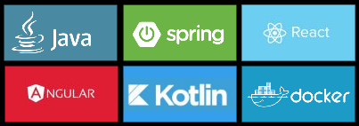
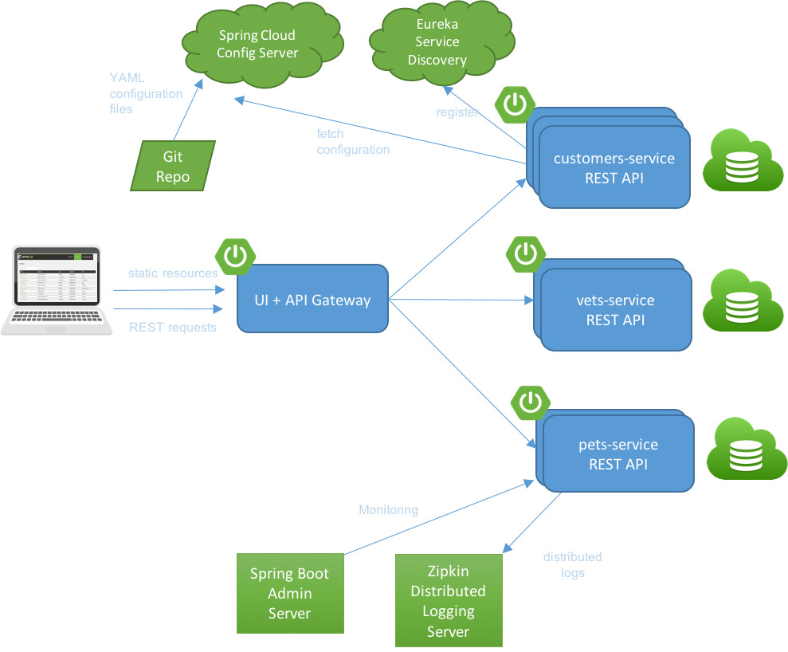

The Spring PetClinic is a sample application designed to show how the Spring stack can be used to build simple, but powerful database-oriented applications.
The official version of PetClinic demonstrates the use of Spring Boot with Spring MVC and Spring Data JPA.
There are quite a lot of forks in a special GitHub organization named spring-petclinic with different:
All PetClinic versions are Open Source software released under the Apache 2.0 license. PetClinic has an active developer community passionate about Spring technologies.
The Spring PetClinic was created in 2003 by Kren Krebs and Juergen Hoeller who are developing the first version of the Spring Framework (released in march 2004). This sample application was a kind of tutorial, a demonstration of what it was possible to conceive. It was distributed with the Spring Framework until the 2.5 version (2007).
At this time, the Spring ecosystem was growing: Spring Batch, Spring Web Services, Spring Security… The PetClinic development was in stand-by.
The Spring community likes demo application. It was missing. So in 2013, Keith Donald, Michael Isvy and Costin Leau has decided to migrate the source code of PetClinic to GitHub and Spring Framework 3. PetClinic relives.
In 2016, PetClinic switched to Spring Boot. Dave Syer and Stéphane Nicoll took the leadership. In parallel, Antoine Rey centralized all forks of Spring PetClinic into a GitHub Organization. Nowadays, 9 forks are maintained by the Spring PetClinic community. If you have a special interest in a different technology stack that could be used to implement the PetClinic or if you want to contribute to an existing PetClinic version, then please join the community there.


Architecture of the distributed version of Spring Petclinic
Owners list page screenshot of the Kotlin version of Spring PetClinic.